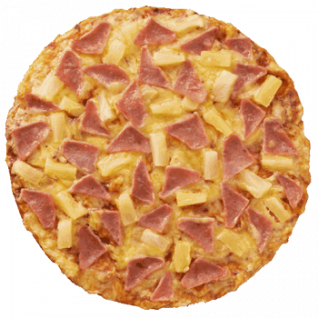
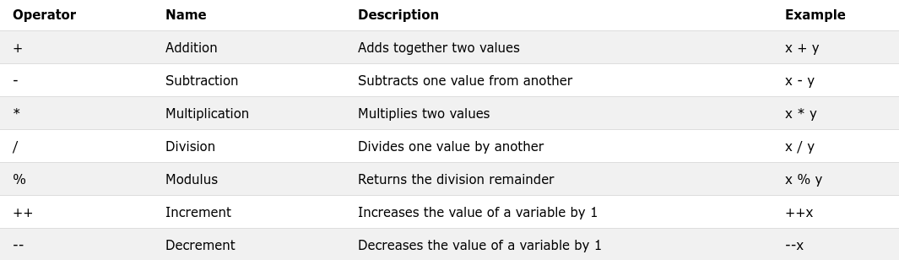
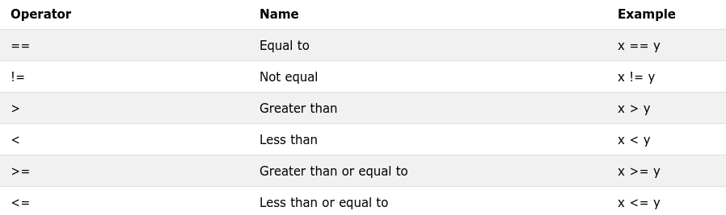

Q1 - coding problems
I'll use Moodle with CodePost.io
(2) Introduction to a programming language - hello world
Instructions from your teacher:
Click the "run" button in the top left and see your text show up in the terminal in the bottom left.
You would then have created the quintessential first program, the "Hello World!".
What can you change in the code for it to say "Hello Sir Roy!"?
Try it! :)
If you got it to work, edit the multiline comments to describe what you've done to the program.
#include <iostream>
int main() {
std::cout << "Hello World!\n";
}
(3.1) Constants and Variables - pizza
Instructions from your teacher:
Pizza problem - Canseco - Aug 2020

Today we'll be computing (not eating) pizzas! The sizes of Shakey's pizzas are the following: - regular - 8" - large - 11" - party = 14"
The prices of Shakey's Thin Crust Hawaiian Pizza (my favorite) are the following: - regular - 283 pesos - large - 434 pesos - party - 625 pesos
Let's make a program that will help us figure out which pizza size has the best price. We do that by computing the area of each pizza size and comparing that to the price.We want the pizza with the smallest pesos per square inch.
Here's what's needed to create such a program. - PI - needed for getting areas of circles. I want to be very accurate, so we're using it with up to 100 decimal places. - const - stands for constant. Useful so that we lock the value of PI and prevent possible changes within the program. - float - this is a type of data that the computer will expect to be a number with a decimal place, for example, PI. - int - these are integers or numbers without decimal places, like our pizza diameters. - string - these are a collection of characters, such as a word, for example, "regular pizza".
Instructions
Read through the program I created. Pay special attention to the multiline comment at the top, which tells you what I want to do in the program.Pay attention too to the single-line comments that I've placed around to help you understand what's going on.
Take note: - variables are boxes for data. They have values and they have types (e.g. int, float, string). - constants prevent the program from changing the value of the variable
Run the program. You should see the price per square inch of a regular Shakey's Hawaiian Pizza. Now change the given values in the program so that it gives the price per square inch for the large pizza.Now change the given values in the program so that it gives the price per square inch for the party pizza.Which of the pizzas is most cost-effective? Change the given values in the program to the most cost-effective pizza.Check that the output of the black terminal.Submit the program. :)
/*
I want the students to learn about constants and variables through trying to decipher which pizza sizes are best to buy.
One way of doing this is to compare how much a square inch of regular pizza vs a large pizza vs a party pizza.
To compute to cost of a square inch of pizza, we have to get the area of the pizza.
We then divide the price of the pizza by its area.
We print the output to the terminal.
*/
#include <iostream>
using namespace std;
// This is where you input the given values
const float PI = 3.1415926535897932384626433832795028841971693993751058209749445923078164062862089986280348253421170679;
string pizza_name = "regular"; // string means a string of characters
int diameter = 8; // int means integer or no decimal parts
int price = 283; // float means number with decimal parts
float area = 0; // we put 0 here as a placeholder since we haven't computed for the pizza's area
// This is the main computing part of your program.
int main() {
float radius = diameter / 2;
area = PI * radius * radius;
float price_per_area = price / area;
cout << "Hello!\n";
cout << "The price per square inch of a " ;
cout << pizza_name ;
cout << " Hawaiian pizza is ";
cout << price_per_area;
}
(3.5) Input and Output Statements - square
Instructions from your teacher:
Input and Output
We use the command cin>> in order to take input from the user.We use the command cout<< in order to print text to the screen. If you are working offline, you'd probably need to enter the input in the terminal when you run the program.In repl.it, you first put input in the stdin text box. To do that, you click on the following icon in the upper right corner of the black terminal.
A text box will show up and you just enter the input and click on the "Set input" button.
Instructions
- Put 5 as input and run the program
- Check the terminal and see that it gives the cube of 5 correctly
- Read the single-line comments and see if you can figure out what's happening with each line of code.
- Now edit the code so that it gives the square of a number, and says so.
- Change the input to my (Sir Roy) Pisay batch. Clue, the digits of my batch sum up to 5. Clue, my batch is prime.
- Run the code.
- Submit
#include <iostream>
using namespace std;
int main() {
int num; // you first make a variable to hold your input
// take user's input using cin>> and put it in your variable
cin>> num;
// now output the cube of that number using cout<<
cout << num << " cubed is " << num * num * num << "\n";
}
(3.7.1) Operators, expressions ( Arithmetic) - Calculator
Instructions from your teacher:
Simple Calculator
Today we shall create the beginnings of a calculator program. It shall have the following abilities:- add - subtract - multiply - divide - get remainder - increment, which means to increase by 1 - decrement, which means to decrease by 1
Here is a table of the code we'll use today.

Instructions
- Note: endl means "end line" or print a new line in C++.
- Read through the program and see if you can create an expectation as to what the output should be
- Save the program as calculator.cpp
- compile the program
g++ -o calculator calculator.cpp - run the program from the commandline with 2 numerical arguments
./calculator 4 5 - Notice that only the first line is mathematically correct *Correct the rest of the program
- Run the corrected program and check if the terminal shows what you expect
- Upload your calculator.cpp file to codepost.io
Dig Deeper
The results of the division might be looking weird. In which case, remember that we are only using int in this program.That means it cannot handle decimal places at the moment. Any decimals in the results will be ignored by C++.
#include <iostream>
using namespace std;
int main(int argc, char *argv[]) {
string name = argv[0];
int x = atoi(argv[1]); // converts first argument to int
int y = atoi(argv[2]); // converts second argument to int
cout << "There are " << argc << " arguments for this program, when including the filename." << endl;
cout << name << endl;
cout << "The first argument in the program is " << x << endl;
cout << "The second argument in the program is " << y << endl;
cout << "Adding x and y equals " << x + y << endl;
cout << "Subracting x from y equals " << y << endl ;
cout << "Multiplying x by y equals " << y << endl ;
cout << "Dividing x by y equals " << y << endl ;
cout << "Getting the modulus of x by y equals " << y << endl ;
cout << "Incrementing x equals " << y << endl ;
cout << "Decrementing y equals " << y << endl ;
}
(3.7.2) Operators, expressions (Relational)
Instructions from your teacher:
Binary Problem

C++ can compare values and tell you whether they're equal, greater than, less than, or something like that.It then says whether it is or it isn't, but it can only respond in code. - C++ will return "1" if it means true. - C++ will return "0" if it means false.
Instructions
- Read through the comments in the code and see if you can understand how the code works because of the comments
- Get a piece of paper and write down what you expect the output of the code will be.
- Run the code. Is it what you expected? If not exactly, what have you missed?
- Notice that the numbers in x and y are being compared and 6 comparisons become the 6 digits: 010101
- Recall from gr.7 that 010101 in binary is equal to 21 (i.e. 16+4+1)
- I want the binary output to equal Sir Roy's age, which is 35. Change the values of x and y in the code to achieve this.
#include <iostream>
using namespace std;
int main() {
// let's have C++ print out its code true and false
cout << "True: " << true << endl ;
cout << "False: " << false << endl ;
cout << "\n"; // "\n" means new line.
// now let's get two numbers to compare: x and y
// remember to place the numbers in the input box, one line each
int x,y;
x = 5;
y = 6;
// here we make the comparisons and output whether they're true (i.e. 1) or false (i.e. 0) for each comparison
cout << (x == y) ;
cout << (x != y) ;
cout << (x > y) ;
cout << (x < y) ;
cout << (x >= y) ;
cout << (x <= y) ;
Q1 PT
Part 1 Adder
Fix the following code to be able to do what the comments describe. This program has to be flexible.
Examples:
./a 1 3 results in 4
./a 7.2 3.3 results in 10.5
/*********************************************
create a file called a.cpp
this file will contain a program that adds two numbers
the numbers will be given as commandline arguments
if you compile using the following command:
g++ -o a a.cpp
to run the program and add the numbers 4 and 5 you type:
./a 4 5
this will result to:
9
use the datatype float for all numbers
**********************************************/
#include <iostream>
using namespace std;
int main(int argc, char *argv[]){
float x = atof(argv[1]); // converts alphanumeric to float
float y = atof(argv[2]);
cout << x << y;
}
Part 2 Subtracter
Fix the following code to be able to do what the comments describe. This program has to be flexible.
Examples:
./a 1 3 results in -2
./a 7.2 3.3 results in 3.9
/*********************************************
create a file called s.cpp
this file will contain a program that subtracts two numbers
the numbers will be given as commandline arguments
if you compile using the following command:
g++ -o s s.cpp
to run the program and add the numbers 4 and 5 you type:
./s 4 5
this will result to:
-1
use the datatype float for all numbers
**********************************************/
#include <iostream>
using namespace std;
int main(int argc, char *argv[]){
}
Part 3 Multiplier
Fix the following code to be able to do what the comments describe. This program has to be flexible.
Examples:
./a 1 3 results in 3
./a 7.2 3.3 results in 23.76
/*********************************************
create a file called m.cpp
this file will contain a program that multiplies two numbers
the numbers will be given as commandline arguments
if you compile using the following command:
g++ -o m m.cpp
to run the program and add the numbers 4 and 5 you type:
./s 4 5
this will result to:
20
use the datatype float for all numbers
**********************************************/
#include <iostream>
using namespace std;
Part 4 Divider
Fix the following code to be able to do what the comments describe. This program has to be flexible.
Examples:
./a 3 1 results in 3
./a 7.2 3.6 results in 2
/*********************************************
create a file called d.cpp
this file will contain a program that divides two numbers
the numbers will be given as commandline arguments
if you compile using the following command:
g++ -o d d.cpp
to run the program and add the numbers 4 and 5 you type:
./s 4 5
this will result to:
0.8
use the datatype float for all numbers
**********************************************/